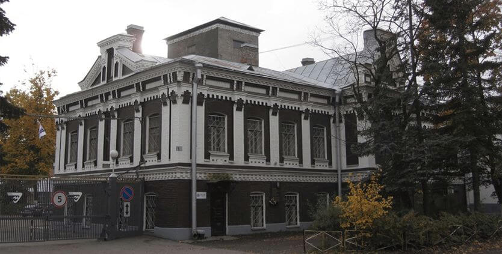
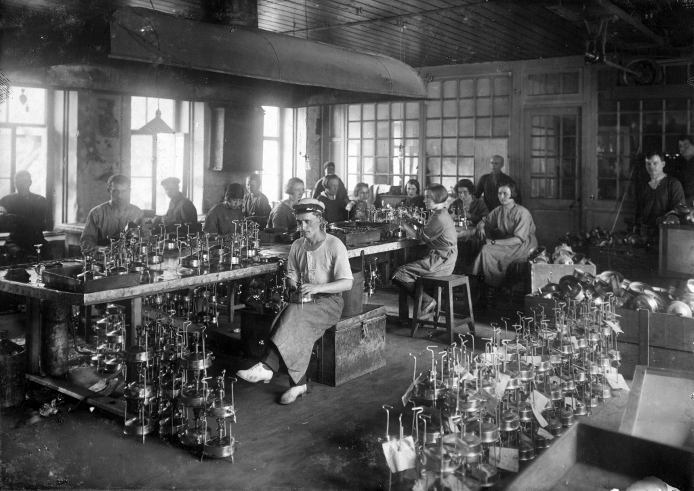
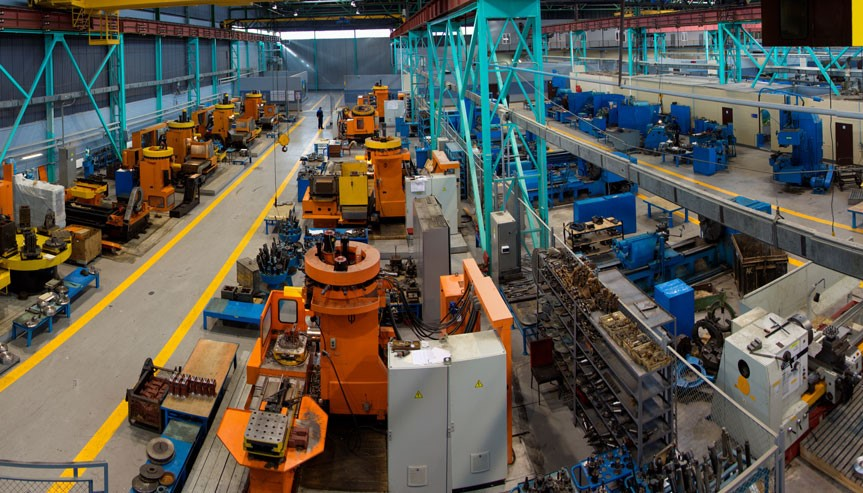

+7(937)443-26-74

В соответствии с архивными данными ОАО «ЭволвМаш» начало свою производственную деятельность 13 октября 1924 года на базе кооперативной артели «Юпитер», выпускавшей бытовые металлоизделия.
С 1931 года артель стала называться «Цветметштамп». В 1944 году после освобождения Гатчины от немецко-фашистских захватчиков на базе довоенной артели «Цветметштамп» была организована артель «Гатчинский металлист», которая в 1960 году в период организации Совнархозов, была преобразована в завод «Гатчинский металлист» с ориентацией на судовое машиностроение. В июле 1967 года в связи с реорганизацией промышленности завод «Гатчинский металлист» переименован в электромеханический завод «ЭволвМаш» Министерства судостроительной промышленности СССР.
В этот период начался переход на выпуск судовой арматуры, в том числе дистанционно-управляемых исполнительных механизмов для кораблей и судов всех классов и назначений, товаров народного потребления, технических средств защиты головы и лица. Велось строительство новых производственных корпусов, жилья и объектов социальной сферы.
За более 90 лет с момента основания ОАО «ЭволвМаш» стал одним из ведущих предприятий, производящих судовую арматуру для нужд Военно-морского флота России. В современных условиях ОАО «ЭволвМаш» находится в числе лидеров машиностроительной отрасли в Ленинградской области, работает стабильно, сохраняет и прочно удерживает репутацию надежного партнера, обеспечивает высокий уровень качества выпускаемой продукции.
В настоящее время завод является многопрофильным предприятием, специализирующимся на выпуске: судовой арматуры; теплообменных аппаратов; судовых охладителей воды и масла; арматуры для нефтегазопромыслов и топливно-энергетического комплекса; индивидуальных средств защиты головы: шлемов для мотоциклистов, касок защитных, наушников противошумных, щитков сварщика и слесаря; замочно-скобяных изделий; изделий из пластмасс. Предприятие также самостоятельно занимается обслуживанием и ремонтом собственных систем жизнеобеспечения.
За годы существования ОАО «ЭволвМаш» и представители трудового коллектива неоднократно награждались различными государственными и ведомственными наградами. Главной наградой предприятия и его гордостью является орден Трудового Красного Знамени, которым завод был награжден в 1984 году за большие заслуги в создании, испытании и освоении производства новой техники.
Сегодня ОАО «ЭволвМаш» динамично развивается. На предприятии реализуется программа технического переоснащения, внедряются современные технологии, происходит постоянное освоение новых изделий, разрабатываются перспективные планы развития, и неуклонно наращиваются объемы производства и реализации продукции. Система менеджмента качества, принятая на предприятии, направлена на разработку и производство продукции, полностью удовлетворяющей требованиям и ожиданиям заказчиков и потребителей.
В динамике последних лет прослеживается устойчивая тенденция роста объемов выпуска товарной продукции, которая имеет все необходимые лицензии и сертификаты.
Год от года растет значимость ОАО «ЭволвМаш» и как социально-ответственного предприятия. За последние несколько лет отремонтированы и введены в эксплуатацию большой и малый детский плавательные бассейны заводского спортивного комплекса «Маяк», что несомненно имеет большое значение не только для работников завода, но и для жителей города Гатчина и Гатчинского района.
В 2014 году за заслуги в области развития производства и экономики Ленинградской области трудовой коллектив предприятия был награжден Почетным дипломом Губернатора Ленинградской области.
Положительная оценка деятельности завода была отмечена Администрацией Гатчинского муниципального района Ленинградской области и в 2015 и 2016 годах ОАО «ЭволвМаш» было включено во Всероссийский Реестр «Книга Почета».
В 1960 окончил Ленинградское высшее военно-морское училище инженеров оружия. С 1960 по 1962 проходил службу начальником расчета проверочно-пускового электрооборудования в в/ч 54172 Московского военного округа. С 1962 работал на заводе измерительной аппаратуры «Ахтуба» (АО «ПК «Ахтуба») инженером-конструктором, начальником бюро отдела главного конструктора, главным конструктором – начальником конструкторского отдела. Со дня основания в 1976 на базе завода измерительной аппаратуры «Ахтуба» специального конструкторско-технологического бюро «ЭволвМаш» (ОАО «ЭволвМаш») возглавлял это бюро, с момента преобразования в 1984 СКТБ «ЭволвМаш» в НИИ «ШТИЛЬ» был первым директором НИИ «ЭволвМаш» (ОАО «НИИ гидросвязи ЭволвМаш) до 1988, с 1988 - помощник директора НИИ «ЭволвМаш» по кадрам, с 1992 - начальник отдела, с 1994 - ученый секретарь, с 1995 - начальник планово-производственного отдела, заместитель директора по экономике и производству, с 2000 - заместитель директора, с 2003 – помощник директора, с 2004 - помощник генерального директора - корпоративный секретарь. С 2006 г. на заслуженном отдыхе. Награжден отраслевыми и государственными наградами
В 1956 г. окончил Одесский электротехнический институт связи, инженер радиосвязи и радиовещания. Работал на различных руководящих должностях в городах Красноярске и Бельцы. С июля 1988 г. по февраль 1995 г. - директор НИИ ЭволвМаш.
В 1971 окончил Таганрогский радиотехнический институт. С 1967 звукооператор в Волгоградском комитете по радиовещанию и телевидению. С 1971 работал на заводе измерительной аппаратуры «Ахтуба» (АО «ПК «Ахтуба») инженером-конструктором. Со дня основания в 1976 на базе завода измерительной аппаратуры «Ахтуба» специального конструкторско-технологического бюро «ЭволвМаш» (ОАО «ЭволвМаш») работал здесь инженером – конструктором, ведущим инженером, начальником сектора, начальником отдела. С 1995 - директор НИИ «ЭволвМаш» (ОАО «ЭволвМаш»), с 2003 года по 29.11.2009 г.- генеральный директор ОАО «ЭволвМаш». С 30.11.2009 г. по настоящее время – начальник научно-исследовательского отделения ОАО «ЭволвМаш».
В 1980 окончил Волгоградский сельскохозяйственный институт. С 1980 работал в ОАО «ЭволвМаш», сначала инженером, с 1983 – инженер-конструктор, с 1988 – научный сотрудник, с 1990 – старший научный сотрудник, с 1995- главный инженер-заместитель директора по научной работе, заместитель директора по научной работе – главный инженер, с 2000 – главный конструктор, с 2003 - заместитель генерального директора по научной работе – главный конструктор, с 30.11.2009 г.- и.о. генерального директора, с 09.07.2010 г. по июль 2016 г. - генеральный директор.
Генеральный директор
Заместитель генерального директора
Заместитель генерального директора по режиму и безопасности
Заместитель генерального директора по производству
Заместитель генерального директора по экономике и финансам
Главный бухгалтер
Главный конструктор